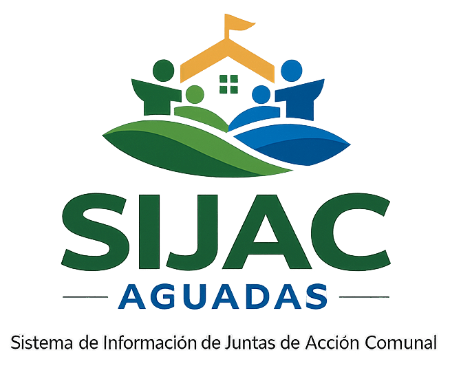
Un sistema web para organizar la información de las 68 Juntas de Acción Comunal de Aguadas, Caldas.
SIJAC Aguadas es un sistema web que reúne en un solo lugar la información de las Juntas de Acción Comunal del municipio. En este documento presento qué es, para qué sirve y cómo se construyó.
El objetivo es claro: que la Oficina de Desarrollo Comunitario tenga a la mano, ordenada y segura, la información de cada junta, y que pueda consultarla desde el computador o el celular.
Todas las Juntas de Acción Comunal del municipio en un solo lugar.
Juntas, reuniones, actas, compromisos, actividades, reportes y más.
Administrador, que edita, y Consulta, que solo mira e imprime.
Por qué hacía falta este sistema.
Un recorrido por las pantallas, con capturas reales de la aplicación.
Explicado de la forma más sencilla posible.
Los pasos, las herramientas y los resultados.
Las Juntas de Acción Comunal son las organizaciones de los barrios y las veredas. Cada una tiene presidente, tesorero, reuniones, actas, convenios… y la alcaldía tiene que estar pendiente de las 68.
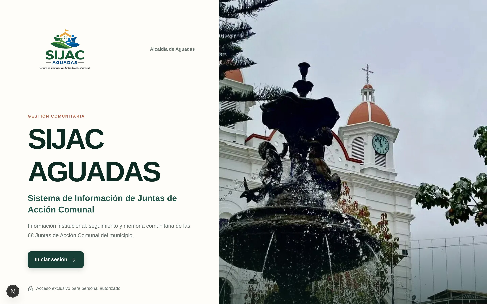
La página de inicio del sistema, con una foto de la plaza principal de Aguadas.
Después de iniciar sesión, el sistema saluda y muestra un resumen de cómo va todo: cuántas juntas hay, cuántas están activas, cuántos afiliados y qué compromisos siguen abiertos.
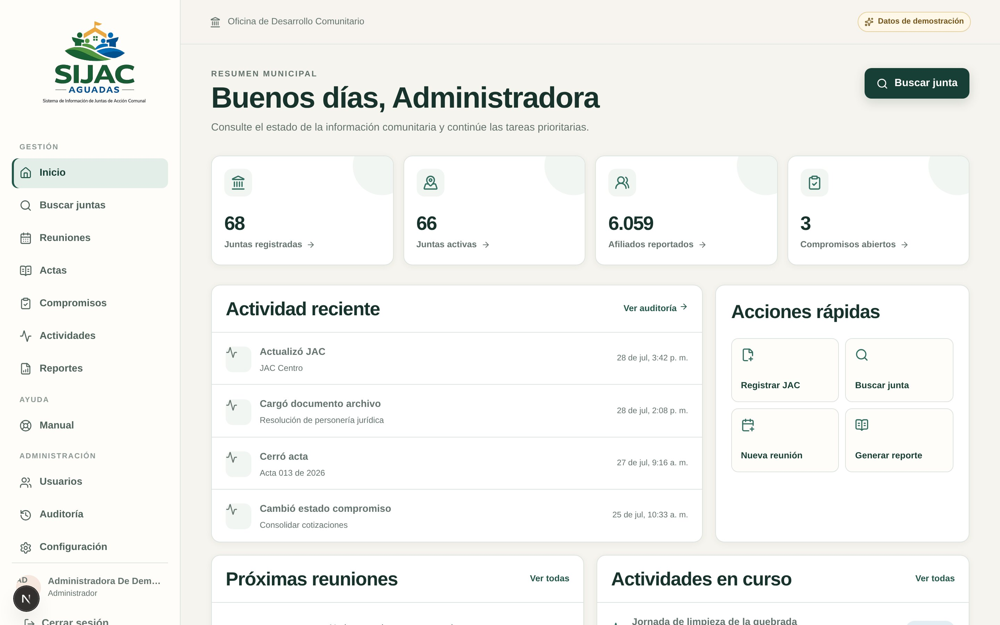
Panel principal con indicadores, actividad reciente, acciones rápidas y próximas reuniones. (Los datos son de demostración).
A la izquierda siempre está el menú. Las “acciones rápidas” llevan directo a lo que más se hace: registrar una junta, buscar una o crear una reunión.
“Todos los números del panel se calculan en vivo a partir de la base de datos.”
Hay un directorio donde se puede buscar por nombre, código, barrio, vereda o NIT, y filtrar por estado o por zona (urbana o rural).
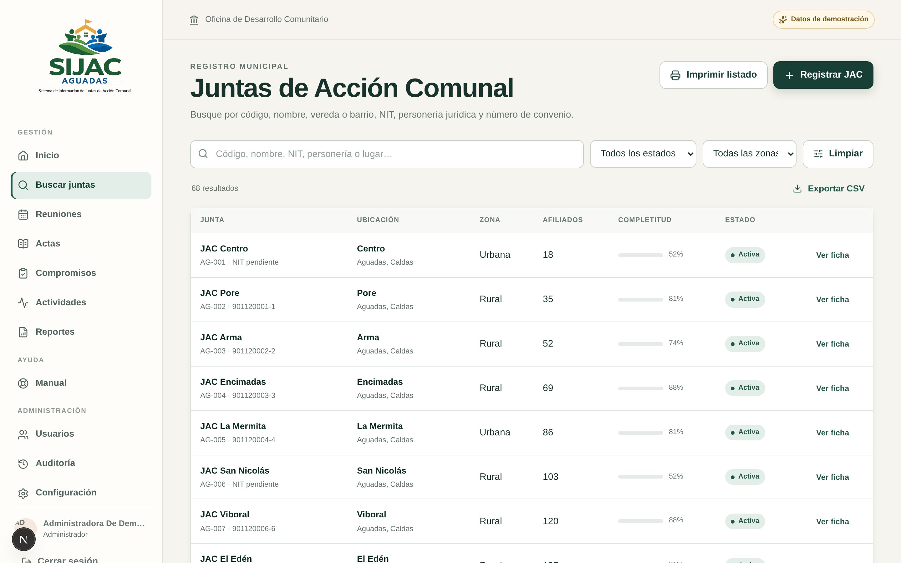
Directorio de juntas con buscador, filtros, porcentaje de información completa y exportación a CSV.
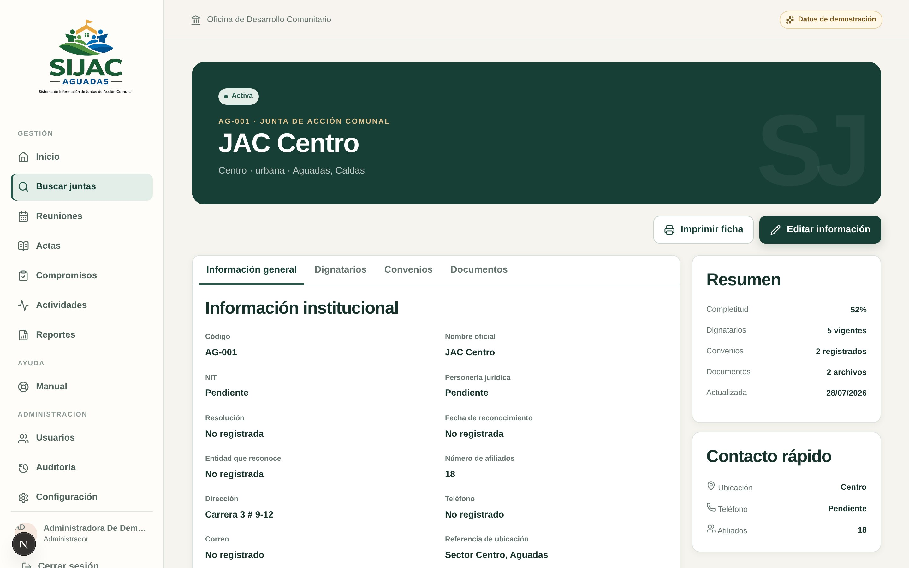
La ficha de cada junta: información institucional, dignatarios, convenios y documentos en pestañas.
Esta parte sigue el camino real de una reunión comunal:
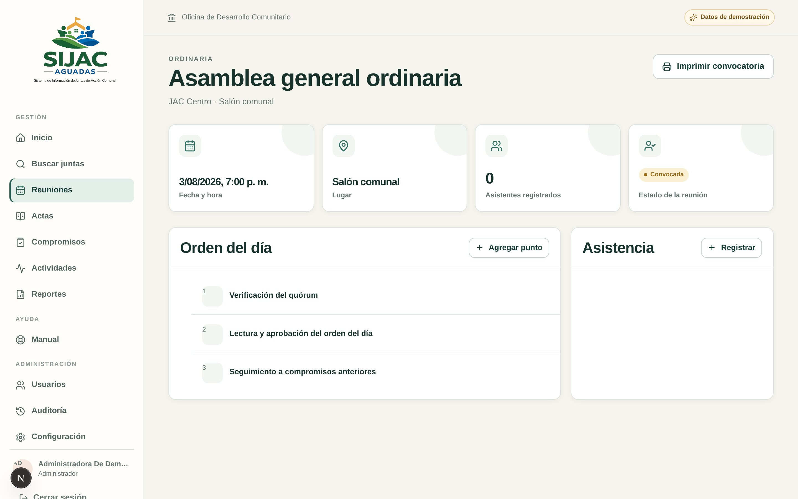
Detalle de una reunión con orden del día y asistencia.
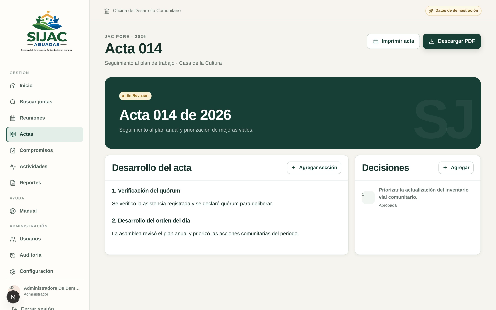
Un acta en revisión, con su desarrollo y decisiones.
Cada registro tiene un estado. Un acta pasa de Borrador a En revisión y luego a Cerrada, y el sistema no deja saltarse pasos. Así nadie cierra un acta por accidente.
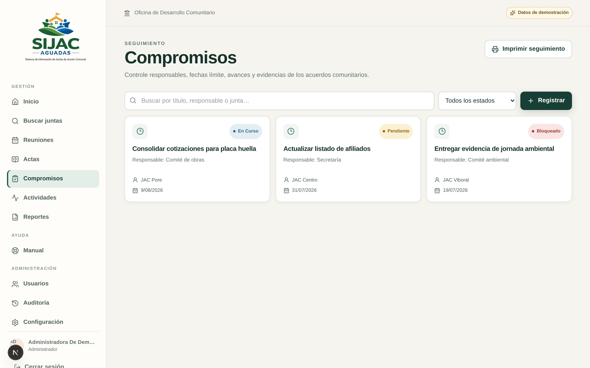
Lo que se acuerda en una reunión queda con responsable, fecha límite y estado: pendiente, en curso, bloqueado o cumplido.
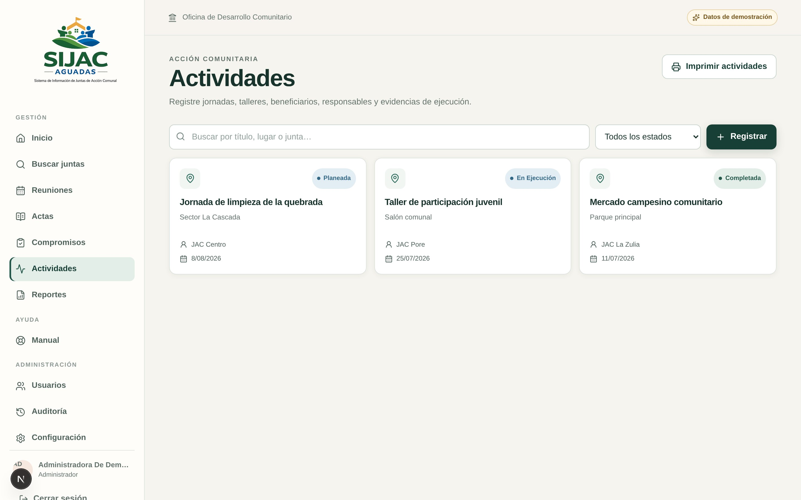
Jornadas de limpieza, talleres, mercados campesinos… con lugar, fecha, beneficiarios y evidencias.
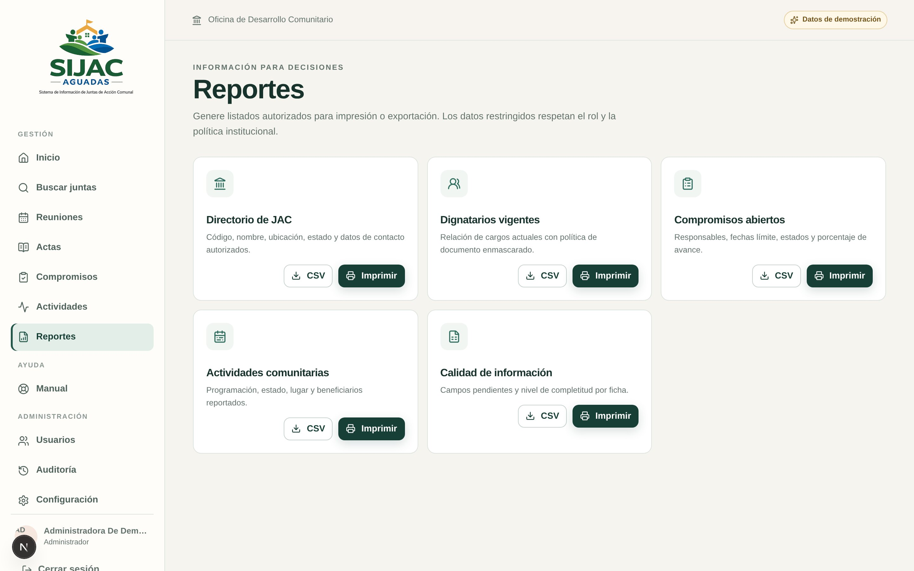
Con un clic salen listados para imprimir o descargar en CSV (se abre en Excel): directorio de juntas, dignatarios vigentes, compromisos abiertos, actividades y calidad de la información, que muestra qué fichas están incompletas.
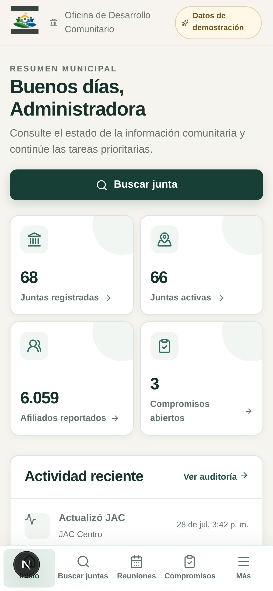
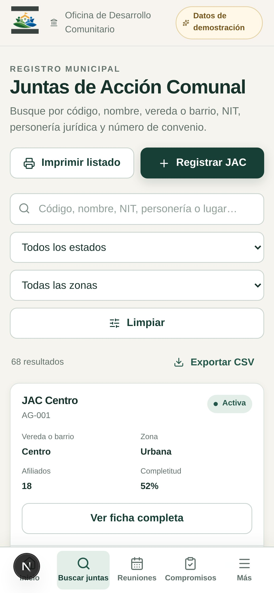
Muchos líderes comunales usan más el celular que el computador, así que todo se diseñó primero para pantallas pequeñas (mobile first).
Además es una PWA: se puede “instalar” como si fuera una app, con su ícono en la pantalla de inicio, sin pasar por ninguna tienda.
“Se usa igual de bien en el computador, la tableta o el celular.”
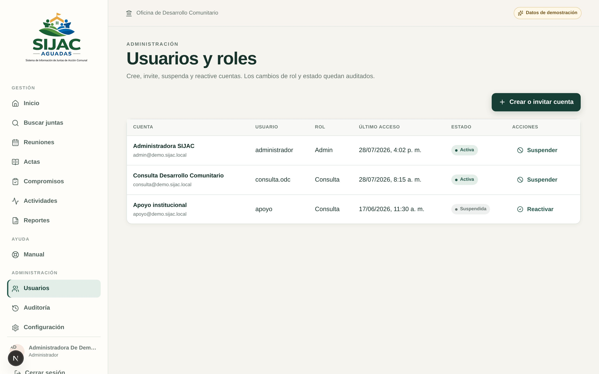
Usuarios y roles: invitar por correo, suspender o reactivar cuentas.
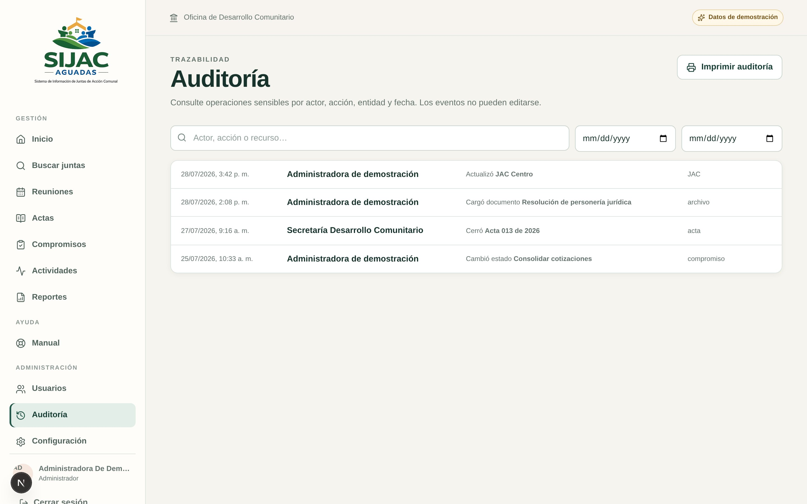
Auditoría: queda guardado quién cambió qué y cuándo.
En pocas palabras: el usuario abre la página, la aplicación procesa lo que pide y guarda o busca la información en la nube.
Como el sistema maneja datos de personas, la seguridad es una prioridad. Estas son las cosas que tiene el sistema:
Con correo o usuario y contraseña. Si alguien intenta muchas veces, el sistema lo frena.
El rol Consulta solo puede ver. Los permisos se revisan en la pantalla y también en el servidor.
Los documentos no tienen un link público: se descargan con enlaces que se vencen.
Llega un correo con un enlace de un solo uso para crear otra contraseña.
Los cambios sensibles quedan registrados y no se pueden editar.
Al instalarlo se crean dos, para que la alcaldía nunca se quede sin acceso.
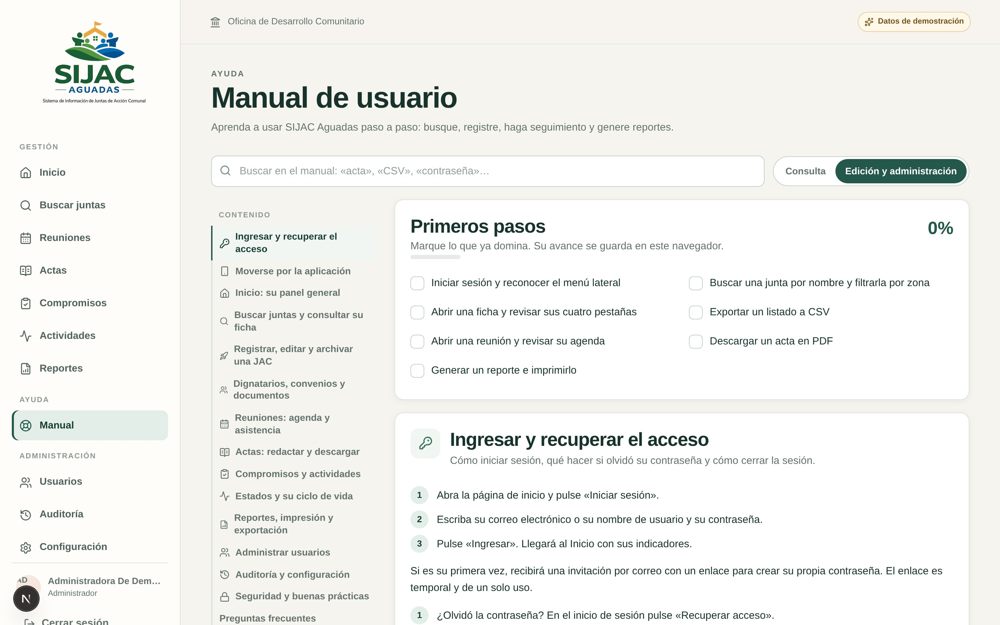
Pensado para las personas que no son “de sistemas”: un manual interactivo, con buscador y una lista de primeros pasos que se va marcando a medida que uno aprende.
Primero escribí los casos de uso: quién hace qué en el sistema. Me salieron 20, desde “iniciar sesión” hasta “generar un acta en PDF”.
Dibujé las tablas: juntas, dignatarios, reuniones, actas… y cómo se relacionan entre sí.
Hice el panel, el directorio y las fichas. Usé los colores verdes y terracota pensando en las montañas y los techos de Aguadas.
Inicio de sesión, roles, recuperación de contraseña y correos.
El proyecto empezó con Supabase y luego se migró todo a Cloudflare, para que fuera más simple y económico de mantener.
Hice un botón de “instalar con un clic” y un asistente de configuración inicial, para que la alcaldía no tenga que saber programar.
Por ejemplo, se ajustaron las fechas a la zona horaria de Colombia para que siempre salgan con la hora correcta.
Tecnologías modernas, apoyadas en su documentación oficial.
React / Next.js: para hacer las pantallas.
TypeScript: JavaScript que avisa cuando hay un error.
Drizzle + D1: para hablar con la base de datos.
Cloudflare: donde vive la aplicación en internet.
Git: guardar cada avance, como “puntos de control” de un videojuego.
Un programa no sirve si la gente no lo entiende. Por eso todo está en español sencillo y tiene un manual.
Con Git cada cambio queda registrado, y siempre se puede volver a una versión anterior.
Un sistema grande se vuelve manejable si se divide en módulos pequeños.
Proteger los datos de la comunidad es tan importante como que todo se vea bonito.
SIJAC Aguadas es una herramienta útil para la comunidad de Aguadas. Espero sus preguntas y sugerencias.
— Maria Clara Álvarez Toloza